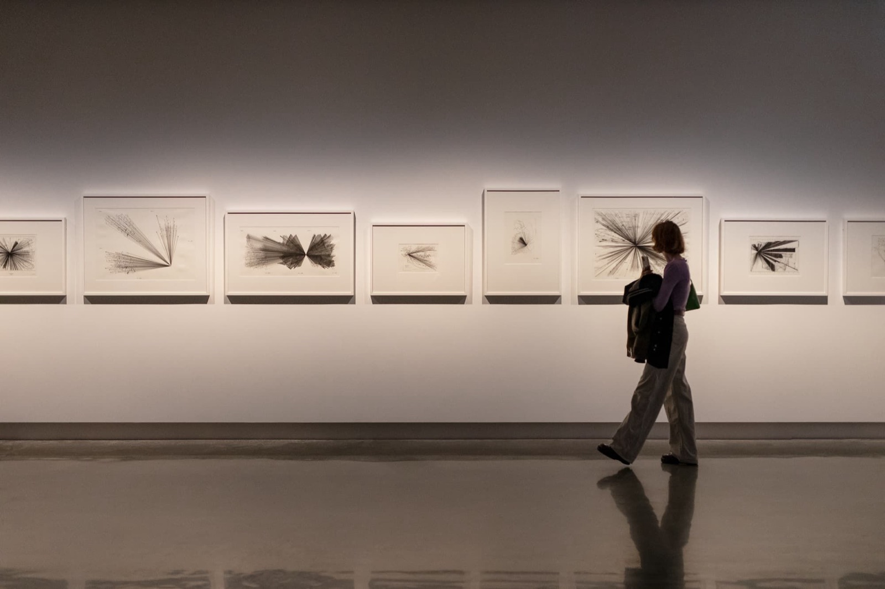
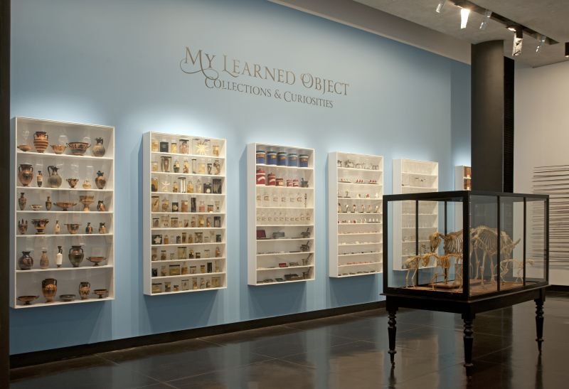

Cultural Collections
CCS brings together the University of Melbourne’s rich and diverse cultural collections into a single discovery experience.

Welcome to CCS. A New Way to Discover the University’s Cultural Collections
The University of Melbourne's cultural collections are unrivalled among Australian universities, spanning historical and contemporary items in the fields of visual arts, rare books, medical history, botany, zoology, and geology, as well as the disciplines of science, engineering and information technology. The University is also custodian to extensive archival holdings, and significant Aboriginal and Torres Strait Islander cultural heritage material, which is of greatest importance to communities of origin and their descendants.
Collections currently available in CCS
CCS will bring together the University of Melbourne’s 30+ cultural collections via a single discovery experience. CCS is part of a broader vision to make the University’s cultural collections more discoverable, accessible and connected, supporting teaching, learning, research and public use. All University collections will join CCS over time.
-

Grainger Museum Collection
Australian musician and composer Percy Grainger established the Grainger Museum and Collection in 1938, motivated by the desire to interpret and contextualise his creative achievements and cultural environment. The Collection is an internationally significant archive of over 100,000 items, spanning a range of disciplines, from experimental sound technology and musical instruments, to costumes, ethnography, art and design. The collection is brought to life through collaboration with students, academic partners and artists and their creative work and production.
Search this Collection (Grainger Museum Collection) -

Harry Brookes Allen Museum of Anatomy and Pathology
The Harry Brookes Allen Museum of Anatomy and Pathology is one of Australia's largest collections of human tissue specimens, animal anatomy specimens, and historical anatomical models, offering students and researchers a unique insight into the human body.
Search this Collection (Harry Brookes Allen Museum of Anatomy and Pathology) -

Henry Forman Atkinson Dental Museum
Showcases the intriguing history of dental health and development of the dental professions and dental education. The Henry Forman Atkinson Dental Museum collection is the oldest and most significant dental collection in Australia, tracing its origins back to 1884.
Search this Collection (Henry Forman Atkinson Dental Museum) -

Medical History Museum
Since its inception in 1967, the Medical History Museum has developed a diverse and varied collection of over 13,000 items encompassing documents, photographs, artefacts, artworks, medical and scientific equipment and associated research material, encompassing the history of medicine in Victoria, Australia and internationally.
Search this Collection (Medical History Museum) -

University Art Collection
The University of Melbourne Art Collection is the largest University-based art collection in Australia, comprising over 18,000 artworks. The collection includes major holdings of paintings, prints and drawings, ceramics, and sculpture, including contemporary Australian art and contemporary Aboriginal and Torres Strait Islander Art.
Search this Collection (University Art Collection) -

Cultural Collections
CCS will make accessible the University of Melbourne’s 30+ cultural collections via a single discovery experience. More collections will be available over time; in the meantime, for more information about other cultural collections at the University of Melbourne, visit museumsandcollections.unimelb.edu.au/collections.
University museums and collections (opens the Museums and Collections website)